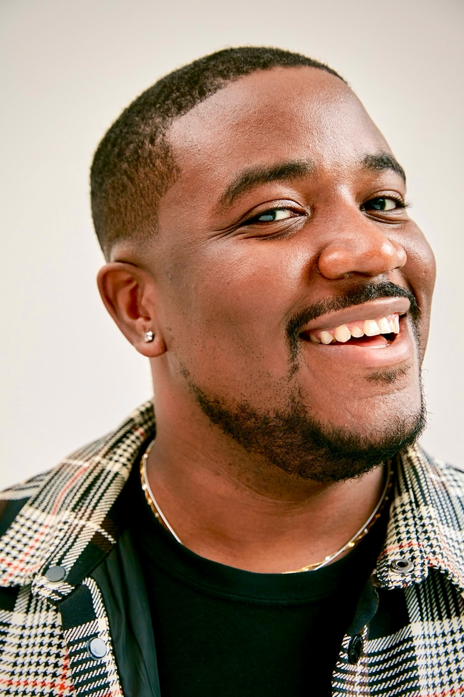

As Sr Design Manager for the Connected Stay team, I led cross-brand UX across Booking.com, Kayak, Priceline, and Agoda — designing an AI-powered trip planning experience that guided travellers from inspiration through booking and trip management in one cohesive flow.

Booking.com's core product was exceptional at transactional booking — find a hotel, book it, done. But modern travellers don't just book hotels. They plan itineraries. They travel with groups. They want to book flights, accommodations, activities, and local experiences that fit together seamlessly.
The Connected Stay team's mission was to design the experience layer that turned Booking.com from a booking engine into a full trip companion — spanning multiple brands in the Booking Holdings portfolio.
I led the UX for Connected Stay — a three-phase trip planning experience built for travellers who want more than just a room. The framework was deceptively simple:
The product also featured a group travel mode — allowing multiple travellers to plan, share, and book together — and contextual recommendations that went beyond hotels to surface local events, concerts, and attractions happening during the travel window.
One of the most ambitious features I designed was a local events and experiences layer woven into the accommodation search. If Beyoncé was performing in Amsterdam on February 24th, the app surfaced accommodation near the Johan Cruyff Arena, bundled ticket options, and suggested "best places to stay close to the venue."
"As you can book anything with Booking.com — seeing Queen Bey perform live has never been easier. Book it all, book it here."
This was a fundamental shift in how the product framed its value proposition — not just finding a room, but enabling the full experience around why someone is travelling in the first place.
Booking.com runs internal hackathons across product teams. I led two separate hackathon projects during my tenure — both of which were strong enough to be greenlit for production development and shipped as real product features. This is a rare outcome that speaks to the quality of the research and design foundation behind the concepts.
Working across four brands in the Booking Holdings portfolio required a level of design systems thinking and stakeholder management that went well beyond a typical product role. Each brand had its own design language, engineering conventions, and user base — while sharing an underlying data layer and booking infrastructure.
I led cross-functional alignment between brand teams, developed shared interaction patterns that felt native to each brand, and contributed to the design system infrastructure that enabled components to be shared and adapted across the portfolio.